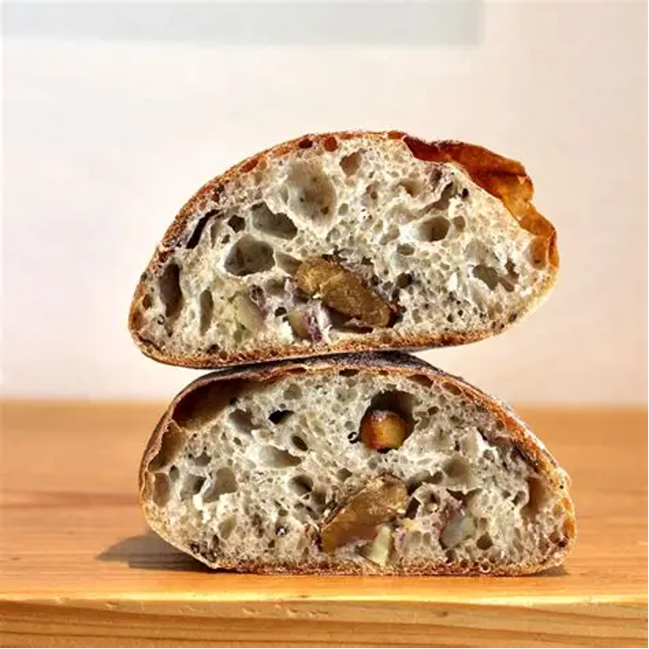
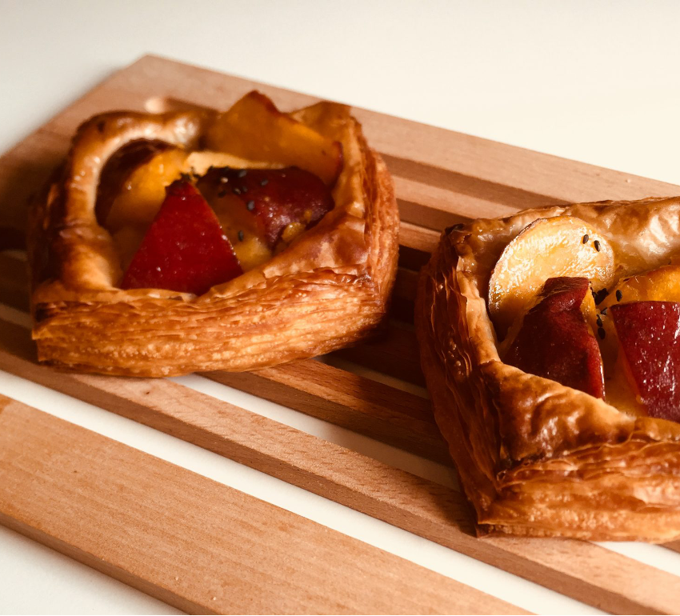
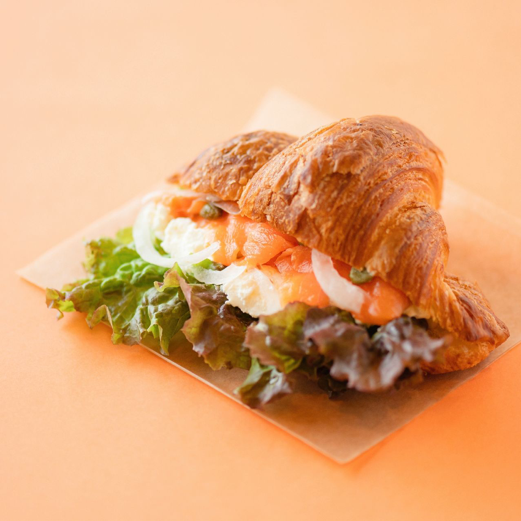

やさしいパンで、つながる笑顔。
ベーカリーヒビノ
―Bakery Hibino―
やさしいパンで、つながる笑顔。
―Bakery Hibino―

たまごロール
その他、店舗にてご用意しています（全 70 種）
栗のカンパーニュ
ハードパン×ゴロンとした栗は相性抜群！くるみ入りで食べ応えのある一品。秋の味覚をお楽しみください。
さつまいもデニッシュ
鹿児島県産の安納芋を使用。
サツマイモの甘さがしっかりと感じられる、贅沢デニッシュ。
サーモンとクリームチーズ
塩のきいたサーモンにコクのあるクリームチーズを合わせました。玉ねぎマリネの酸味が爽やかさをプラス。